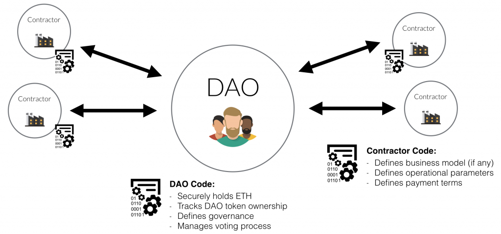

Ethereum was initially described in a white paper by Vitalik Buterin,a programmer involved with Bitcoin Magazine, in late 2013 with a goal of building decentralized applications. Buterin had argued that Bitcoin needed a scripting language for application development. Failing to gain agreement, he proposed development of a new platform with a more general scripting language.
At the time of public announcement in January 2014, the core Ethereum team was Vitalik Buterin, Mihai Alisie, Anthony Di Iorio, and Charles Hoskinson. Formal development of the Ethereum software project began in early 2014 through a Swiss company, Ethereum Switzerland GmbH (EthSuisse). Subsequently, a Swiss non-profit foundation, the Ethereum Foundation (Stiftung Ethereum), was created as well. Development was funded by an online public crowdsale during July–August 2014, with the participants buying the Ethereum value token (ether) with another digital currency, bitcoin. While there was early praise for the technical innovations of Ethereum, questions were also raised about its security and scalability.

In March 2017, various blockchain start-ups, research groups, and Fortune 500 companies announced the creation of the Enterprise Ethereum Alliance (EEA) with 30 founding members. By May, the nonprofit organization had 116 enterprise members—including ConsenSys, CME Group, Cornell University's research group, Toyota Research Institute, Samsung SDS, Microsoft, Intel, J. P. Morgan, Cooley LLP, Merck KGaA, DTCC, Deloitte, Accenture, Banco Santander, BNY Mellon, ING, and National Bank of Canada. By July 2017, there were over 150 members in the alliance, including recent additions MasterCard, Cisco Systems, and Scotiabank.
Several codenamed prototypes of the Ethereum platform were developed by the Foundation, as part of their Proof-of-Concept series, prior to the official launch of the Frontier network. "Olympic" was the last of these prototypes, and public beta pre-release. The Olympic network provided users with a bug bounty of 25,000 ether for stress testing the limits of the Ethereum blockchain. "Frontier" marked the tentative experimental release of the Ethereum platform in July 2015.
"Homestead" was the first to be considered stable. It includes improvements to transaction processing, gas pricing, and security. Since the initial launch, Ethereum has undergone several planned protocol upgrades, which are important changes affecting the underlying functionality and/or incentive structures of the platform.
"Metropolis Part 1: Byzantium" was launched on October 16, 2017, and included changes to reduce the complexity of the EVM and provide more flexibility for smart contract developers. Byzantium also adds supports for zk-SNARKs (from Zcash); with the first zk-SNARK transaction occurring on testnet on September 19, 2017.
There are at least two other protocol upgrades planned in the future: "Metropolis Part 2: Constantinople" will lay the foundations for the transition to proof-of-stake (Casper), make adjustments to the difficulty time bomb, and add support for account abstraction.
In 2016 a decentralized autonomous organization called The DAO, a set of smart contracts developed on the platform, raised a record US$150 million in a crowdsale to fund the project. The DAO was exploited in June when US$50 million in ether were claimed by an anonymous entity. The event sparked a debate in the crypto-community about whether Ethereum should perform a contentious "hard fork" to reappropriate the affected funds. As a result of the dispute, the network split in two. Ethereum (the subject of this article) continued on the forked blockchain, while Ethereum Classic continued on the original blockchain. The hard fork created a rivalry between the two networks.
After the hard fork related to The DAO, Ethereum subsequently forked twice in the fourth quarter of 2016 to deal with other attacks. By the end of November 2016, Ethereum had increased its DDoS protection, de-bloated the blockchain, and thwarted further spam attacks by hackers.